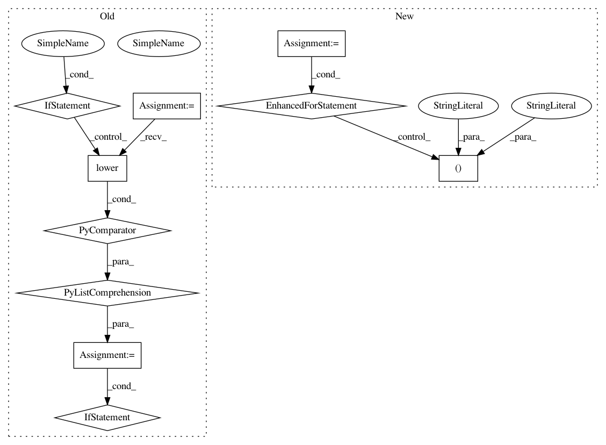

0f36f4aae8fbdd387a34a88d5e270716d987559e,nltk/sentiment/vader.py,SentimentIntensityAnalyzer,_only_if_check,#SentimentIntensityAnalyzer#Any#Any#,497
Before Change
return sentiments
def _only_if_check(self, words_and_emoticons, sentiments):
words_and_emoticons_lower = [str(w).lower() for w in words_and_emoticons]
check = "only"
if check in words_and_emoticons_lower:
i = words_and_emoticons_lower.index(check)
if len(words_and_emoticons)>i+1 and "if" == words_and_emoticons_lower[i+1]:
for si, sentiment in enumerate(sentiments):
if si < i:
sentiments[si] = sentiment * 0.5
return sentiments
def _in_spite_of_check(self, words_and_emoticons, sentiments):
words_and_emoticons_lower = [str(w).lower() for w in words_and_emoticons]
After Change
Not used in default VADER algorithm.
Extension from https://github.com/nltk/nltk/pull/2307
for idx, ng in enumerate(ngrams(words_and_emoticons, 2)):
if ng == ("only", "if"):
for sidx, sentiment in enumerate(sentiments):
if idx < sidx:
sentiments[sidx] = sentiment * 0.5
return sentiments
def _in_spite_of_check(self, words_and_emoticons, sentiments):
In pattern: SUPERPATTERN
Frequency: 3
Non-data size: 10
Instances
Project Name: nltk/nltk
Commit Name: 0f36f4aae8fbdd387a34a88d5e270716d987559e
Time: 2019-09-02
Author: alvations@gmail.com
File Name: nltk/sentiment/vader.py
Class Name: SentimentIntensityAnalyzer
Method Name: _only_if_check
Project Name: stanfordnlp/stanza
Commit Name: 0cc7c20d37f76139f27ce171b1dd9289c922efbd
Time: 2019-12-18
Author: zyh@stanford.edu
File Name: stanfordnlp/models/ner/utils.py
Class Name:
Method Name: is_bio_scheme
Project Name: nltk/nltk
Commit Name: 0f36f4aae8fbdd387a34a88d5e270716d987559e
Time: 2019-09-02
Author: alvations@gmail.com
File Name: nltk/sentiment/vader.py
Class Name: SentimentIntensityAnalyzer
Method Name: _in_spite_of_check